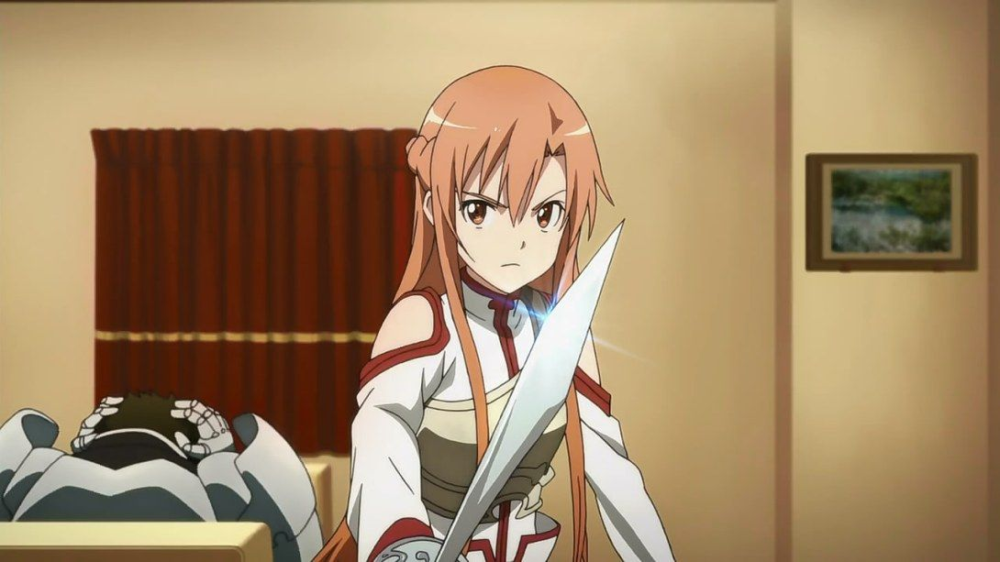

Персонажи SAO
Основные персонажи
Кирито
Кирито / Кадзуто Киригая (прозвища "Чёрный мечник", "Битер") — центральный персонаж истории, от лица которого чаще всего ведётся повествование. Впервые сыграл в Sword Art Online в возрасте четырнадцати лет (когда участвовал в закрытом бета-тестировании игры). Благодаря участию в бета-тесте SAO Кирито удалось получить начальное преимущество перед другими игроками в развитии своего персонажа. А позднее, уже благодаря отточенным умениям и сноровке, стать самым сильным игроком SAO. Кадзуто в совершенстве владеет одноручным мечом. Он постоянно носит одежду чёрного цвета, которая обладает высоким игровым потенциалом к скрытности (из-за чего, кстати, и получил своё прозвище «Чёрный мечник»). Кроме того, Кирито является обладателем уникального навыка «Два клинка», который, по заявлению Каябы Акихико, предназначался игроку с самой быстрой реакцией. Данным навыком он пользуется лишь в чрезвычайных ситуациях, не желая привлекать к себе излишнего внимания других игроков. Кирито — «соло-игрок» (человек, играющий в одиночку и зачастую избегающий всяческих контактов с остальными игроками), однако изредка присоединяется к «пати» (командной игре), например, для уничтожения босса этажа. Является почётным членом «проходчиков» (тех немногих очень сильных игроков, что желают поскорее положить конец кошмарам SAO). Состоит в очень хороших отношениях с Асуной, которая впоследствии станет его возлюбленной, а чуть позже — женой (в игре). Ближе к концу ветки «Айнкрад» был вынужден присоединиться к гильдии «Рыцари Крови».
В реальном мире Кадзуто Киригая живёт со своей тётей (приёмной матерью) и двоюродной сестрой. Биологические родители Кадзуто погибли в результате несчастного случая, когда ему было около одного года. После событий Sword Art Online занимается исследованием технологии «Полного Погружения». В будущем желает стать разработчиком технологий взаимодействия с виртуальной реальностью, а также развивать и улучшать уже имеющиеся.
Асуна
Асуна / Асуна Юки (прозвище "Молния") — одна из немногих игроков, использующих в онлайн-игре своё имя. Примерно на год старше Кадзуто. Первый заместитель главы гильдии «Рыцари Крови». Очень красивая и эффектная девушка, благодаря чему у неё всегда много поклонников, а также тайных и явных «воздыхателей». Одна из сильнейших игроков в SAO, мастер владения рапирой. Из-за невероятной скорости и точности своих атак получила прозвище «Молния».
В реальности Асуна — дочь президента крупной японской корпорации «Ректо». Находясь под давлением высоких ожиданий со стороны родителей, Асуна предпочитала уклоняться от принятия самостоятельных решений, полностью подчиняясь воле отца. Однако, оказавшись в рядах заложников Sword Art Online, Асуна решила пересмотреть своё отношение к жизни. Поэтому она не стала отсиживаться в «Безопасной зоне», а решила сражаться, впоследствии пополнив ряды отважных воинов «Переднего края» (место где «проходчики» в данный момент «пробиваются» на следующий этаж Айнкрада).
Второстепенные персонажи
Юи
Юи — искусственный интеллект, одна из вспомогательных программ управления Sword Art Online. Полное наименование — англ. Mental Health Counselling Program, «Программа защиты психического здоровья», кодовое имя «Юи». Изначально была предназначена для психологической помощи игрокам SAO. Для общения с людьми, нуждающимися в поддержке, Юи была придана внешность десятилетней девочки. После того, как Sword Art Online превратилась в «игру на выживание», от основной управляющей программы SAO, «Кардинал», Юи поступил запрет на любое вмешательство или контакты с игроками (что изначально было её основной функцией). Два года Юи ощущала через шлемы Нервной передачи страдания, гнев и страх игроков, будучи не в силах чем-нибудь помочь им. В итоге Юи, по её собственному выражению, «сломалась» — частично утратила память и дар речи. В побочной истории арки SAO — «Девочка утренней росы» знакомится с Кирито и Асуной и становится для них своего рода приёмной дочерью. В то время, как программа «Кардинал» стирала Юи, Кирито удалось переместить её в локальную память своего шлема Нервной Передачи в виде, пригодном для дальнейшей реанимации. Называет Кирито и Асуну «папой» и «мамой», постоянно бранит Кирито, когда, по её мнению, тот слишком близко контактирует с другими женщинами (за исключением Асуны и Сугухи). Является также персонажем арок ALO и GGO, приняв в игре ALfheim Online образ маленькой феи-пикси.

Лифа
Лифа / Сугуха Киригая — двоюродная сестра Кирито / Кадзуто Киригаи, родная дочь его тёти, Мидори. С ранних лет занимается кэндо, в чём достигла больших успехов. После того, как Кадзуто оказался в ловушке SAO, чтобы лучше понять, что испытывает сейчас её брат, сама начала играть в VRMMORPG ALfheim Online под именем Лифа, выбрав для своего игрового персонажа расу сильф. Во время игры случайно встречает сприггана по имени Кирито, не подозревая, что тот на самом деле является Кадзуто и вызывается помочь ему достичь Иггдрасиля. Испытывает к Кадзуто и к его альтер эго в игре — Кирито — противоречивые запретные чувства, далёкие от сестринских.
Кляйн
Кляйн / Рётаро Цубои — друг Кирито, с которым они познакомились в первый день игры в SAO. Лидер Гильдии «Фуринкадзан», состоящей преимущественно из тех, с кем Кляйн был знаком ещё до игры. Излюбленное игровое оружие — катана.
Эгиль
Эгиль / Эндрю Гиллберт Миллз — друг Кирито, темнокожий лысый мужчина, владеющий лавкой. В реальном мире — владелец кафе «Кости», которым во время событий в Айнкраде управляла его жена. Впоследствии его кафе стало частым местом встреч Кирито и его друзей. Излюбленное игровое оружие — топор.
Силика
Силика / Кэйко Аяно — персонаж побочной истории «Чёрный мечник» из арки SAO, также является одним из действующих лиц арок ALO и GGO. В реальном мире — девочка четырнадцати лет. Игрок среднего уровня, развивающая навык кинжала. Благодаря прокачанности таланта приручительницы смогла вступить в союз с игровым монстром — «Пернатым драконом», которому дала имя Пина. Но позже, монстр погиб в бою. Помочь взялся Кирито, для чего ему пришлось за несколько дней прокачать Силику до уровня, достаточного, чтобы та смогла воскресить Пину. Истинным намерением Кирито было поймать на живца и ликвидировать группу убийц игроков под руководством Розалии.
Лизбет
Лизбет / Рика Синодзаки — персонаж побочной истории «Тепло сердца» из арки SAO, также является одним из действующих лиц арок ALO и GGO. В SAO развивала навык кузнеца-оружейника, благодаря чему познакомилась с Асуной, которая стала её лучшей подругой. С её наковальни сошли как рапира Асуны, так и меч Кирито. Во время поиска металла для меча Кирито, влюбилась в него, но, поняв что Асуна также питает к нему чувства, отказалась от своих притязаний на Кирито.
Синон
Синон / Асада Сино — один из ключевых персонажей арки GGO, девушка-снайпер. Стала игроком Gun Gale Online по совету своего друга, чтобы побороть последствия детской психологической травмы, связанной с огнестрельным оружием. Владелец редкого игрового оружия — снайперской винтовки PGM Ultima Ratio Hecate II, из-за которой получила своё прозвище. В реальном мире — ученица старшей школы.
Юки
Юки / Юки Конно — персонаж арки «Розарий матери», лидер гильдии «Спящие рыцари», группы неизлечимо больных, играющих с помощью технологии медикубоида. Она играла в ALO за расу импов и устраивала поединок с каждым желающим, кто готов был выстоять её одиннадцатиударный оригинальный навык меча. Из-за непобеждаемого статуса ей дали титул «Абсолютный меч». Асуна помогла Юки и участникам гильдии победить босса двадцать седьмого этажа, чтобы их имена остались выгравированными на монументе мечников. После победы, Конно начинает избегать Асуну и выясняется, что она является носителем ВИЧ-инфекции последней стадии. Последние минуты жизни Юки провела в игре, в окружении Асуны и её друзей, участников гильдии и более тысячи игроков всех рас.
Юджио
Юджио — один из ключевых персонажей арки «Алисизация», лучший друг и верный компаньон Кирито на протяжении всего его пребывания в Подмирье. Он также являлся «другом детства» Алисы и Кирито, а его главным желанием стало вернуть Алису домой после того, как её забрала Церковь Аксиом. Кирито обучил его навыкам владения мечом в стиле «Айнкрад», взяв меч голубой розы в качестве основного оружия. Юджио нарушает кодекс запретов, чтобы спасти учениц академии и становится первым искусственным интеллектом, которому удалось сломать печать в правом глазу. Под влиянием Квинеллы он становится рыцарем единства Юджио (Синтез 32), но вырвавшись из-под её контроля, был рассечён в битве пополам критическим ударом и умер на глазах опустошённого Кирито. Отправившись в загробный мир вместе с юной Алисой, Юджио продолжил поддерживать Кирито в его битвах против PoH и Габриэля Миллера.
Алиса
Алиса Цуберг — одна из ключевых персонажей арки «Алисизация», таинственная девушка, которая была «подругой детства» Кирито и Юджио. В одиннадцать лет была схвачена рыцарем единства и увезена в Церковь Аксиом за нарушение закона, войдя на тёмную территорию. Через несколько лет, она сама становится рыцарем единства Алисой (Синтез 30). Потеряв детские воспоминания, Алиса изначально враждебно настроена к Кирито и Юджио, однако позже ей удаётся сломать печать в правом глазу и присоединится к ним в битве против Квинеллы. Вернувшись в деревню Рулид, она воссоединяется со своей младшей сестрой Селкой. Пока Кирито оставался в коме, Алиса ежедневно ухаживала за ним. В войне против тёмной территории, Алису похищает Габриэль Миллер, но благодаря усилиям Беркули, Синон, Кирито и Асуны, она спасается. Затем её отправляют в реальный мир, где дают тело андроида, созданное по её подобию и официально представленное миру как первый восходящий искусственный интеллект.